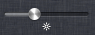
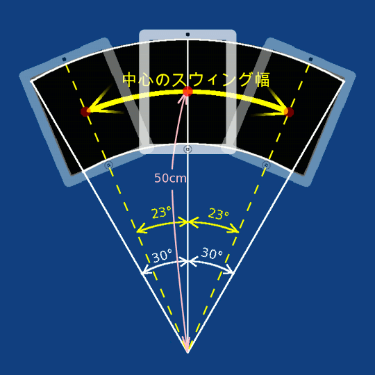
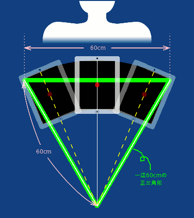
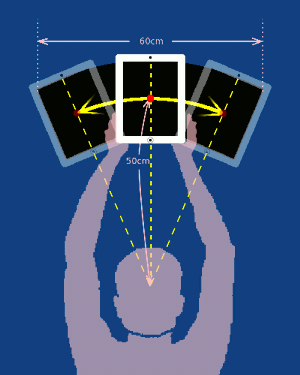
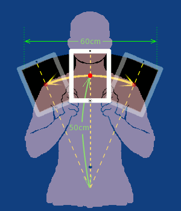

SwingSignの使い方
※ご注意
このユーザーガイドは、現時点でVer 1.0の状態のままで、Ver 2.0で追加した機能については述べられていません。
追加機能については、製品サポートサイトで予告として動画数本で機能説明をしています。
当面それらを参照してください。
このガイドは、当方のwebサイトに存在し、当アプリがアクセスして表示しているものです。Ver 2.0の追加機能については、数日中に説明したものを作成し、当ガイドと入れ替えする予定です。アプリはアップグレードする必要はありません。[記 2013年3月11日 12:00]
【注意事項、免責事項】
当アプリはiPad(iPad2、およびその後継機も含む）本体を左右に振って楽しむものですが、
その際、誤ってiPad本体を落下させる等によりそれが破損した場合、当方はその責任を負いません。
また、本体を回りの人、または物にぶつけて傷害を与えたり破損させた場合も、当方はその責任を負いません。
使用者はそのようなことを起こさないよう、十分に注意して使用して下さい。
また、コンサート会場等で当アプリを使う場合、iPad自体の持ち込みが禁止されていたり、当アプリのようなサインボードの類が禁止されている可能性もあります。使用の可否は主催者側に確認の上、その指示に従って下さい。
当方は当アプリの使用に伴ういかなる損害にも責任を負いません。
基本的な使い方
- 準備
- サインがよく見えるように、以下の手順で輝度を最高にする。
- ホームボタンをダブルクリック
- 下端の履歴リストを右にスワイプ。
- 左から2つ目の画面の輝度調節のスライドを最高にする
- サインをデザイン
- "Pen Color"で線の色、"Line Cap & Join"で線の端や角のスタイル、"Line Width"で太さを決めて、扇型のエリアにドラッグしてサインを書く。
- これらの線の属性は、１つのストローク（画面にタッチしてドラッグして指を離すまで）毎に変更できる。
- 書き直したい場合、"Undo"ボタンをタップする毎に最後に書いたストロークを消して前の状態に戻る。
- 最初から全部書き直す場合は"Clear"ボタンをタップする。
- サインのスイング表示をテスト
ここではまず、動作原理と使い方を理解するために、iPadを目の前に画面を自分に向けて持ってスウィングする。これらが理解できたら、次の項目でiPadをひっくりかえして相手側に向けてスウィングする。
- "Display"ボタンをタップし、縦位置に持ち替えてカメラ部分が上になるよう垂直に起こし、画面を自分に向け、腕を車のハンドルを握るくらい緩く前にのばす。
すると、今デザインしたサインの中央部が拡大されて全面表示になる。
- 最初は左右の傾きの角度にリアルタイムに反応して、サインの表示部分が移動する。すなわちゆっくり右に傾けていくと、扇形のサインの右端に向かって画面表示が移動していく。左に傾けるとサイン左端に向かって同様に。
（これを「非同期状態」という）
- 片側に10度以上傾けると、画面の上辺の傾けた側の角にまたはのマーク（コーナーインジケーター）が点灯する。
このとき、アプリではその側に十分傾いたものと認識し、左右のインディケーターが交互に点灯するとスウィングが1往復したものと見なし、その所要時間を記録する。
- そのスウィング往復時間が以下の条件を満たすよう、なるべく同じテンポで左右のコーナーインジケーターが点灯することを確認しながらスウィングを繰り返す。
- 往復の時間が0.5～5.0秒(片側24～240拍(BPM)）の範囲
- 続く３往復がその平均とどれも±３０％の誤差以内
- スウィングのテンポを一定に保つには、テンポが一定の音楽のリズムに合わすとよい。
本体内蔵iPodで音楽を掛けた状態で同時にSwingSignを使うこともできる。
または、メトロノームのアプリを別途iPhoneかiPod Touchで起動してそれに合わせてもよい。
- テンポは上記範囲内で同期状態（後述）が機能するものの、遅すぎるとサイン全体を読みとるのに時間がかかり、速すぎると画像がブレて読みづらくなる。片側６０拍＝１秒に１回程度がサインを読みやすい。時計の秒針に合わせてスウィングしてもよい。
120拍以上の音楽に合わせる場合は２拍に１回と半減させてスウィングすると読みやすくなる。
- サインを表示する扇型の領域は、iPadを持ってスウィング（＝振り子運動）したときの画面の軌跡であるが、その幅の中心（＝iPadの中心）までの振り子運動の半径は50cm。振り幅は画面領域の軌跡が左右30度づつ。よってiPad本体の中心は左右23度づつ傾ける。

- わかりやすい目安としては、扇型のスウィングの幅は画面上端の左右が60cmで肩幅から5cmはみ出す程度。
画面下端はiPadの画面（枠は除く）の短い辺で３つくらいで、肩幅程度。
画面上端からスウィングの中心までも60cmなので、スウィングの上側両端と回転の中心を結ぶと一辺60cmの正三角形となる。

- スウィングのテンポが前述の同期の条件を満たすと、"Sync"のマークと左右のどちらかの矢印が交互に点灯し、「同期状態」になったことを表す。（これら合わせて「Syncインジケーター」と呼ぶ）
または
- 同期状態では、直近3回のスウィングの平均のテンポで現時点の傾きを推測計算した角度を使って画面のサインの表示部分を移動する。
"-> Sync" は、その推測角度が画面に向かって左端から右方向へスウィングしていることを表し、"Sync <-" はその逆方向を表している。自分のスウィングをこの矢印の方向に合わせるように調整すると、テンポが一定に保たれ、空間に静止状態でサインが見える。
- スウィングが不適切であると、サインが静止して見えない。よくあるサインの見え方と原因・対処は次のとおり。
- スウィングしている方向と逆方向にサインの表示が流れる。縦長に見える。
- →スウィングの幅が狭い。肩幅より5cm外くらいまで、スウィングの幅を広げる。
逆にスウィングする方向にサインが流れる場合は、幅が広すぎなので狭める。
- スウィングしている回転方向にサインの文字が回転する。画面向かって右方向に動かしている場合は時計回り。左方向のときは反時計回り。
- →扇型の回転半径が小さい。スウィングの上側両端と回転の中心を結ぶと一辺60cmの正三角形となるよう半径を大きくする。
- ランダムにサインが左右にぶれる。
- →スウィングのテンポ（一往復の時間）にムラがある。Syncインジケータの左右に点灯する矢印に自分のスウィングを合わす。または、音楽やメトロノームのリズムに合わせてスウィングする。
- 上記でスウィングを調整してもサインが静止して見えない場合、傾きの推測計算に使われている、センサーとのズレ補正値、両端での停止時間の割合等の初期設定値が自分のスウィングのくせに合っていない可能性がある。これらは設定画面で調整できるので、その画面の「各部の説明」を参照。
- サインのスウィング表示を終えるときは、iPad本体を画面を上に水平にする。すると、デザイン画面に戻る。
- 加速度センサーによる最新の１往復が上記同期状態の条件を満たさなかった場合、非同期状態に戻る。
非同期状態からもiPad本体を画面を上に水平にすると、デザイン画面に戻る。
- ミラーモードでの練習
- 上記は概要を理解するため画面を自分に向けて行った。しかし、本来の使い方は、画面を相手に向けてスウィングする。そうすると、画面の状態がよくわからない。
そこで、相手から見たときの印象の確認とスウィングの練習のときに限り、"In Mirror (Flip Horizontal)"のスイッチボタンを「オン」にする。すると、サインの左右が逆転した鏡像反転で表示されるので、これを大きな鏡に向かってスウィングすると、鏡像の鏡像 = 元画像、すなわち、デザインしたときと同じ形で、スウィング表示が実物大で確認できる。
- スウィングのスタイル
- スウィングのスタイルは次の２つが考えられる。
- 両手を挙げ最高の位置で
- 両手でiPadの左右の下の方をつかんで、真上に挙げ、腕を伸ばしたままでスウィング。
鼻のあたりが振り子運動の回転中心になるようにする。

- 人混みに隠れず、よく見える一方、長時間続けると疲れやすい。
頭も一緒にスウィングすれば、インディケータ類の点灯が確認しやすい。
後ろの人の視界に邪魔にならないか要注意。
- 胸の高さで
- 両手でiPadの左右の下の方をつかんで、手を胸の高さでスウィング。丹田（へその下）あたりが振り子運動の回転中心になるようにする。

- 目の前が開けている、段差のあるスタンド等で使用可能。
疲れは両手を挙げたスタイルより少ない。
- 振り子運動の半径が小さくなりやすいので、左右に平行に動かすくらいの心づもりがよい。
- 本番
- "In Mirror (Flip Horizontal)"のスイッチボタンは「オフ」にする。
- 表示する本番がすぐでなければ、ホームボタンを１回押して中断後、他のアプリを使ってもよい。履歴リストからSwingSignをタップすると、前回中断した時点のサインが再表示される。
- 以下の場合は前回中断した時点のサインは破棄され、再起動時クリア状態になる。
- 履歴リストからSwingSignを削除した場合。
- （スリープボタンを長押しして）電源を完全に切って入れ直した場合。
- 本番の表示のタイミングになったら、"Display"ボタンをタップし、画面を相手側に向けてスウィング表示する。
- 上級の使い方
- 慣れてくるとコーナーインジケーターやSyncインジケータを見なくても正しくスウィングできるようになる。これらのインジケーター表示が目障りと思われる場合は、設定で常時非表示にしたり、同期状態になったらフェードアウトで消すことができる。
また、最初の数往復、非同期状態でブレ動いて見えるサインも設定で非表示に指定し、同期状態で静止して見える状態になってから表示することも可能。
これらの設定により、本来の「静止して見えるサイン」のみを相手に表示することができる。
詳しくは「各部の説明」の設定画面の説明を参照。
- 待機時の注意
- スウィングを終えてデザイン画面になってとき、無意識に画面に触れてサインに書き込みをしてしまうことが考えられる。それを防ぐには、スリープボタンを押してスリープ状態にすること。
もし不本意にサインに書き込みをしてしまった場合は"Undo"ボタンを必要な回数タップすることにより、以前の状態に戻すことができる。
各部の説明
- デザイン画面（アプリ立ち上げ時の初期画面）
ユーザが任意のサインを作成する画面。
- サインデザイン領域（上側の黒の扇形の領域）
- 後述の指定された色、線のスタイルと太さで、ドラッグした位置をつなげた線を描画する。
- ストローク（ドラッグ1回の線分）は１００本までの制限あり。
- Pen Color
- 4 x 4色のパレットからタッチした色が使用する色になり、上の"Pen Color:"の右の枠内に表示。黒は消しゴムとして訂正に使うことも可。
初期設定はピンク。
- Line Cap & Join:
- サインの線の端と角の形状の指定。枠が青いものが選択したもの。
初期設定は端も角も丸くしたスタイル。
- Line Width:
- サインの線の太さ。
右のスライダを移動すると太さが変わり左の枠内に実寸で図示される。
- In Mirror (Flip Horizontal):
- 左右ミラー反転表示のオン／オフ指定。
ユーザ自身でスウィング表示した状態を確認したいとき、鏡に映し、これをオンにすると、デザインしたときと同じ形に見える。
デザインを修正するときは、必ずオフに戻すこと。
- "Clear"ボタン
- サインのデザイン領域に書かれたものを全削除（全面黒）にする。
元に戻せないので注意。
- "Undo"ボタン
- 最後に書いたストロークを削除する。
初期状態まで無制限に遡れる。
- "Display"ボタン
- スウィング表示するため、サイン拡大表示画面へ移行する。
- Settingsボタン（歯車）
- Helpボタン（"i"マーク）
- サイン拡大表示画面
空間に仮想の大型サインを表示するために、スウィングに合わせてサインの一部を拡大全面表示する画面。
縦位置にして使用する。
表示直後は、本体の傾きに合わせてリアルタイムにサインの表示部分が移動する。（非同期状態）
一定間隔で左右に振り続けることにより、同期状態に遷移し、本体をスウィングするテンポに合わせてサインの拡大表示部分を移動し、空間に拡大したサインが停止しているように見える。
表示を終えてデザイン画面に戻るには、iPad本体を画面を上にして水平にする。
- コーナーインジケーター
- 左上角のおよび右上角の
- 本体傾き（加速度センサーの入力値）にリアルタイムに連動しスウィングの振幅時間を計測するために十分な角度（約10度）以上傾けると傾けた側の角のインジケーターが点灯する。
スウィングの左右両端とも交互にこれらのインジケーターが点灯すると往復したとみなされる。
これは同期・非同期の状態にかかわらず同じ意味で表示されるので、スウィングは常に、これが両端で交互に点灯するよう注意が必要。
- （※ただし設定により、「常に非表示」または「同期状態になったらフェードアウト」も可能）
- Syncインジケーター
- 画面下方中央のまたは
- "Sync"表示
- 点灯している間、同期（In Sync）状態にあることを示す。
最短で往復3回のスウィングでこれが点灯する。
5回以上往復してもこれが点かない場合は、スウィング両端の傾きが不十分、往復時間が規定より長すぎる、短すぎる、または連続3往復の長さにムラがあることが考えられる。
- "->"および"<-"の表示
- 内部計算により予測された今の傾きがスウィングの両端のどちらからどちらへ本体を振っているかを表す。
"->"は画面に向かって左から右方向へ移動。
"<-"はその逆。
この表示方向と自分のスイングが合っているか確認しタイミング調整する。
- （※設定により、上記３つ合わせて「常に非表示」または「同期状態になったらフェードアウト」も可能）
- 設定画面
表示を動かすタイミングの調整やインジケータ類の表示のOn/Off設定を行う。
これらの設定値は、アプリを終了しても（iPadの電源リセットでも）保存される。
- Sync Adjust
- センサー入力から計算・表示までの時間的なズレの補正値[秒]。
iPadとiPad2等、処理能力に差があると異なってくる。
サイン全体が常に揺れ動いている見える場合にこれを調整する。
この値が小さすぎると、iPadが端に到達してから画像が遅れてついてくる、およびiPadを内側に動かし始めても画像がしばらく止まっている。このため、サイン全体がスウィングしている方向の逆方向へ常に揺れ動いて見える。
逆に大きすぎると、端に到達する前に画像が端を表示し、到達して止まっている間に画像が動き出す。このため、サイン全体がスウィングしている方向、すなわち外側へ常にずれ動いて見える。
初期値 0.20[秒]（iPad2用）
- Edge Rest Rate
- スウィング時、左右両端の各々でiPadが停止している時間（片側）の割合。
この比率は個人差やテンポによる違いがあると思われる。
サインの中央付近は静止して見えるが、両端が動いて見える場合にこれを調整する。
この値が小さすぎると、iPadが端に到達してから画像が遅れてついてくる、およびiPadを内側に動かし始める前に画像が動き始める。このため、サインの中央は停止しているものの、全体が横広がりに見え、端で内側へビクッとずれ動くように見える。
逆に大きすぎると、スウィングが端に達する前に画像が端の画像に動き終わって外へ引きずる、および内側に動かし始めても画像が止まったままで内側へ引きずる。このため、サインの中央は停止しているものの、全体の横が圧縮されて縦長に見え、端だけスウィングで振り回しているように見える。
初期値 0.04（４％）
- Display Frequency
- 1秒間に表示処理をする回数。
この回数が多いほど、速いテンポでスウィングしてもサインのぶれが少なくなり読みやすくなる。
iPad2ではプログラム上の処理能力はほぼ100回/秒まで可能だがこれを100回にすると表示のちらつきが感じられる。
よって初期設定では、ちらつきを感じず明瞭に見られる60回としている。
直下の"(Previous Perfomance)"で表示される実測の1秒間の表示回数を超えてこの項目を設定しても実質的にはPrevious Perfomanceの回数になる。
よって、能力以上に大きい値を設定しても害になることは少ないと思われるが、表示機能との相性で小さい値を設定したほうがサインが見えやすいものになる可能性もある。
- (Previous Performance)
- 前回のサイン拡大表示画面での表示処理回数を所要時間で割った1秒間の表示回数の平均値。実測値。
アプリ立ち上げ後1度もサイン拡大表示画面に移っていない場合は"N/A"（未定）と表示。
- Display Sign In Async State
- サイン拡大表示画面に移って、非同期状態の時、傾きにリアルタイムに合わせて部分表示されるサインを表示するか否か。
使い方に慣れればこれは表示しなくても同期状態でサインをスウィング表示することができるので、まだ静止して見える状態でないサインを相手に見せたくないのであれば、これを「オフ」に設定する。
初期設定は「オン」（表示）。
- Display Corner Indicator
- サイン拡大表示画面の上部の左右コーナーの傾きインジケーターを表示するか否か。
"Off"は非同期状態でも同期状態でも常に非表示。"On"はその両状態で常に表示。"Fade In Sync"は非同期状態では表示するが、同期状態になったときに、数秒のうちにフェードアウトして非表示になる。
コーナーインジケーターは相手側からも見えるものなので、使い方に慣れれば同期状態では非表示になるよう、"Off"または"Fade In Sync"に設定したほうが、サイン表示がより簡潔になる。
- Display Sync Indicator
- 同期状態になったことを表す"<- Sync ->"のインジケーターを表示するか否か。
"Off"は常に非表示。"On"は同期状態にのみ表示。"Fade In Sync"は同期状態になったときに、数秒のうちにフェードアウトして非表示になる。
コーナーインジケーター同様、使い方に慣れれば"Off"または"Fade In Sync"に設定したほうが、サイン表示がより簡潔になる。
- "Reset All to Default"ボタン
- このウィンドウの上記すべての設定をプログラムで規定している初期値に戻す。
- 「完了」ボタン（左上タイトルバー内）
- ヘルプ画面
- "Link Back"ボタン（左上タイトルバー内）
- 「完了」ボタン（右上タイトルバー内）
案内情報
- SwingSign Ver 2.0.alpha.1
- サポート情報：